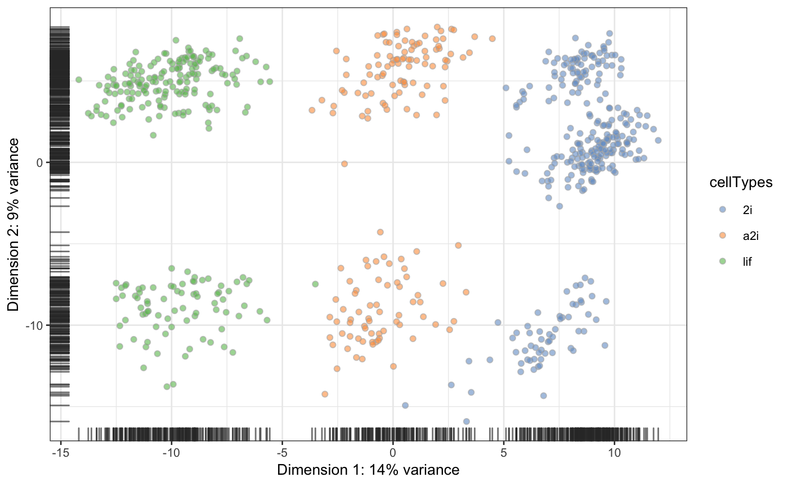
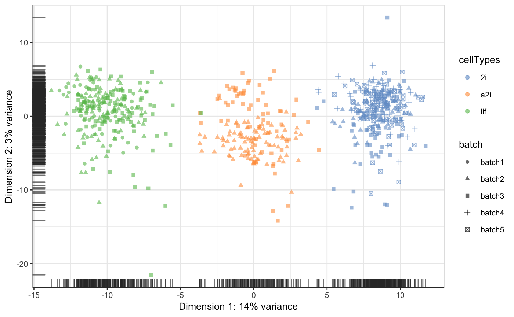
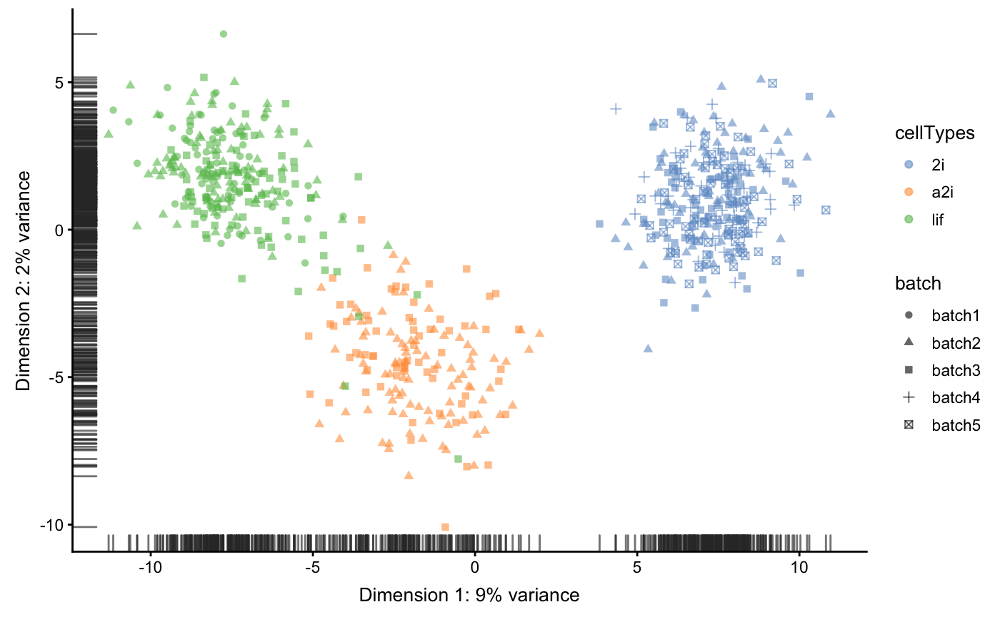
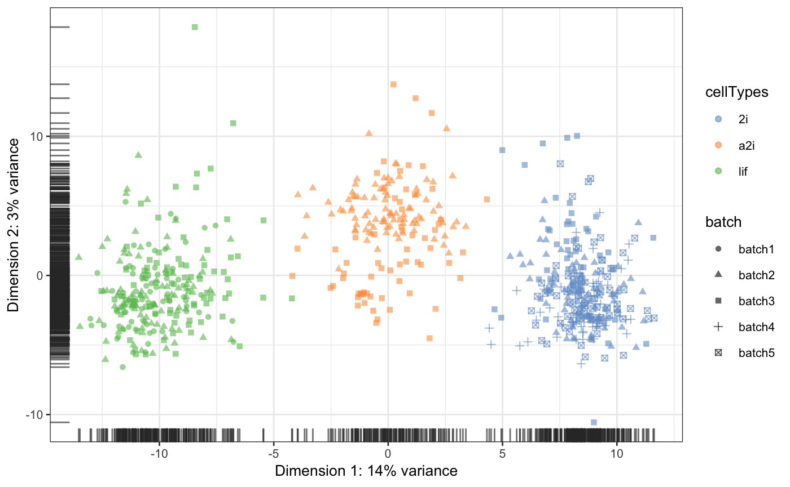
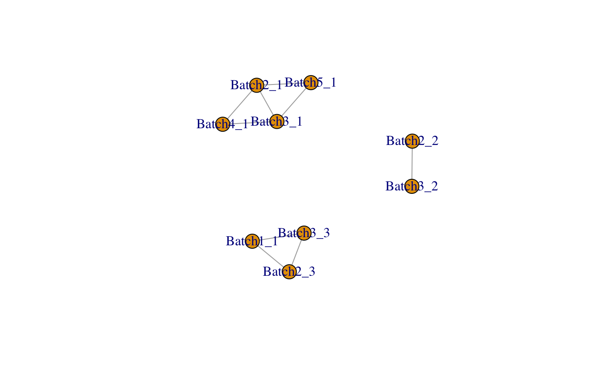
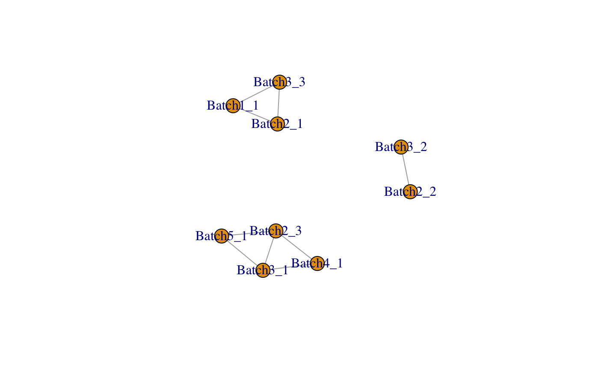
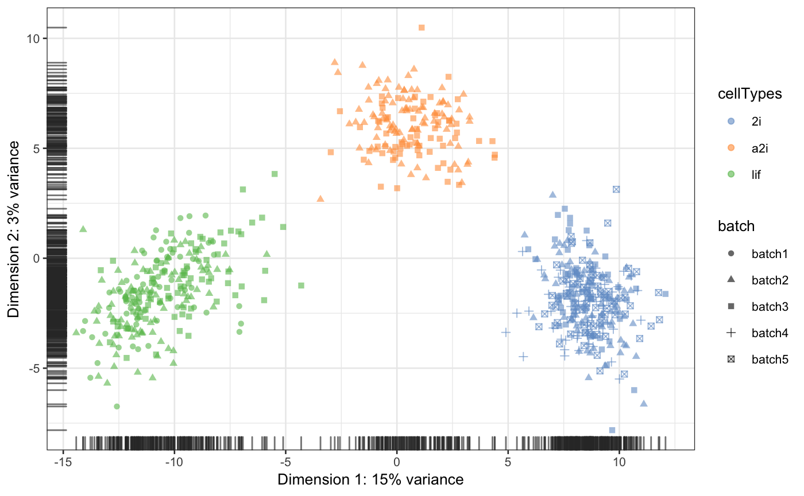
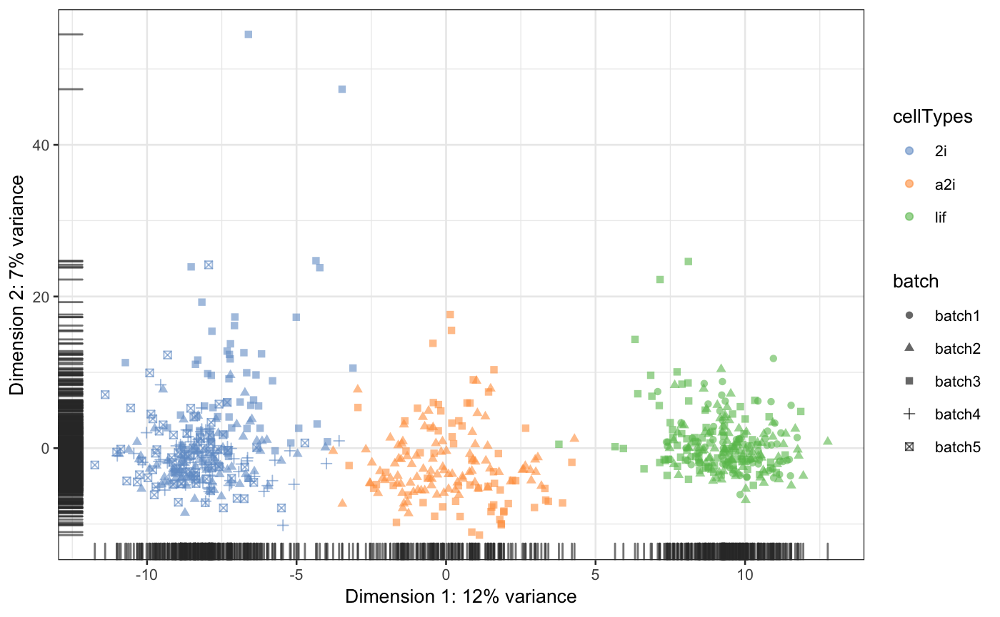

scMerge.Rmdlibrary(scMerge)
library(SingleCellExperiment)
library(scater)#single-cell stably expressed gene list
data("segList_ensemblGeneID")
#mouse ESC data
data("sce_mESC")sce_mESC
#> class: SingleCellExperiment
#> dim: 24224 704
#> metadata(0):
#> assays(2): counts logcounts
#> rownames(24224): ENSMUSG00000000001 ENSMUSG00000000028 ...
#> ENSMUSG00000060565 ENSMUSG00000080069
#> rowData names(0):
#> colnames(704): ola_mES_lif_1_1.counts ola_mES_lif_1_10.counts ...
#> ola_mES_2i_5_95.counts ola_mES_2i_5_96.counts
#> colData names(2): cellTypes batch
#> reducedDimNames(0):
#> spikeNames(0):scater::plotPCA(sce_mESC,colour_by="cellTypes")
system.time(sce_mESC <- scMerge(sce_mESC,
ctl = segList_ensemblGeneID$mouse$mouse_scSEG,
kmeansK = c(1,3,3,1,1),
assay_name = "scMerge_unsupervised"))sce_mESC <- runPCA(sce_mESC, exprs_values = "scMerge_unsupervised")
scater::plotPCA(sce_mESC, colour_by="cellTypes",shape_by="batch")
system.time(sce_mESC <- scMerge(sce_mESC,
ctl = segList_ensemblGeneID$mouse$mouse_scSEG,
kmeansK = c(1,3,3,1,1),
assay_name = "scMerge_unsupervised_80",
replicate_prop = 0.8))sce_mESC <- runPCA(sce_mESC, exprs_values = "scMerge_unsupervised_80")
scater::plotPCA(sce_mESC, colour_by="cellTypes",shape_by="batch")
system.time(sce_mESC <- scMerge(sce_mESC,
ctl = segList_ensemblGeneID$mouse$mouse_scSEG,
kmeansK = c(1,3,3,1,1),
assay_name = "scMerge_unsupervised_50",
replicate_prop = 0.5))sce_mESC <- runPCA(sce_mESC, exprs_values = "scMerge_unsupervised_50")
scater::plotPCA(sce_mESC, colour_by="cellTypes",shape_by="batch")
system.time(sce_mESC <- scMerge(sce_mESC,
ctl = segList_ensemblGeneID$mouse$mouse_scSEG,
kmeansK = c(1,3,3,1,1),
assay_name = "scMerge_unsupervised_50",
replicate_prop = 0.2))sce_mESC <- runPCA(sce_mESC, exprs_values = "scMerge_unsupervised_50")
scater::plotPCA(sce_mESC, colour_by="cellTypes",shape_by="batch")
Perform scMerge using all known cell type information to create pseudo-replicates
sce_mESC <- scMerge(sce_mESC,
ctl = segList_ensemblGeneID$mouse$mouse_scSEG,
kmeansK = c(1,3,3,1,1),
assay_name = "scMerge_supervised",
cell_type = sce_mESC$cellTypes)sce_mESC <- runPCA(sce_mESC, exprs_values = "scMerge_supervised")
scater::plotPCA(sce_mESC, colour_by="cellTypes",shape_by="batch")
Perform scMerge using partial known cell type information
sce_mESC <- scMerge(sce_mESC,
ctl = segList_ensemblGeneID$mouse$mouse_scSEG,
kmeansK = c(1,3,3,1,1),
assay_name = "scMerge_semisupervised1",
cell_type = sce_mESC$cellTypes,
cell_type_inc = which(sce_mESC$cellTypes=="2i"))sce_mESC <- runPCA(sce_mESC, exprs_values = "scMerge_semisupervised1")
scater::plotPCA(sce_mESC, colour_by="cellTypes",shape_by="batch")
Perform scMerge using known cell type information to identify mutual nearest cluster
sce_mESC <- scMerge(sce_mESC,
ctl = segList_ensemblGeneID$mouse$mouse_scSEG,
kmeansK = c(1,3,3,1,1),
assay_name = "scMerge_semisupervised2",
cell_type = sce_mESC$cellTypes,
cell_type_match = T)sce_mESC <- runPCA(sce_mESC, exprs_values = "scMerge_semisupervised2")
scater::plotPCA(sce_mESC, colour_by="cellTypes",shape_by="batch")
sessionInfo()
#> R version 3.5.1 (2018-07-02)
#> Platform: x86_64-apple-darwin15.6.0 (64-bit)
#> Running under: macOS High Sierra 10.13.4
#>
#> Matrix products: default
#> BLAS: /Library/Frameworks/R.framework/Versions/3.5/Resources/lib/libRblas.0.dylib
#> LAPACK: /Library/Frameworks/R.framework/Versions/3.5/Resources/lib/libRlapack.dylib
#>
#> locale:
#> [1] en_AU.UTF-8/en_AU.UTF-8/en_AU.UTF-8/C/en_AU.UTF-8/en_AU.UTF-8
#>
#> attached base packages:
#> [1] parallel stats4 stats graphics grDevices utils datasets
#> [8] methods base
#>
#> other attached packages:
#> [1] scater_1.8.3 ggplot2_3.0.0
#> [3] SingleCellExperiment_1.2.0 SummarizedExperiment_1.10.1
#> [5] DelayedArray_0.6.4 BiocParallel_1.14.2
#> [7] matrixStats_0.54.0 Biobase_2.40.0
#> [9] GenomicRanges_1.32.6 GenomeInfoDb_1.16.0
#> [11] IRanges_2.14.10 S4Vectors_0.18.3
#> [13] BiocGenerics_0.26.0 scMerge_0.1.6.3
#>
#> loaded via a namespace (and not attached):
#> [1] bitops_1.0-6 fs_1.2.5
#> [3] RColorBrewer_1.1-2 rprojroot_1.3-2
#> [5] numDeriv_2016.8-1 tools_3.5.1
#> [7] backports_1.1.2 R6_2.2.2
#> [9] KernSmooth_2.23-15 vipor_0.4.5
#> [11] lazyeval_0.2.1 colorspace_1.3-2
#> [13] withr_2.1.2 tidyselect_0.2.4
#> [15] gridExtra_2.3 compiler_3.5.1
#> [17] xml2_1.2.0 desc_1.2.0
#> [19] labeling_0.3 caTools_1.17.1.1
#> [21] scales_1.0.0 pkgdown_1.1.0
#> [23] commonmark_1.5 stringr_1.3.1
#> [25] digest_0.6.15 rmarkdown_1.10
#> [27] XVector_0.20.0 pkgconfig_2.0.1
#> [29] htmltools_0.3.6 ruv_0.9.7
#> [31] bbmle_1.0.20 limma_3.36.2
#> [33] rlang_0.2.1 rstudioapi_0.7
#> [35] shiny_1.1.0 DelayedMatrixStats_1.2.0
#> [37] prettydoc_0.2.1 bindr_0.1.1
#> [39] gtools_3.8.1 dplyr_0.7.6
#> [41] RCurl_1.95-4.11 magrittr_1.5
#> [43] GenomeInfoDbData_1.1.0 Matrix_1.2-14
#> [45] Rcpp_0.12.18 ggbeeswarm_0.6.0
#> [47] munsell_0.5.0 Rhdf5lib_1.2.1
#> [49] viridis_0.5.1 stringi_1.2.4
#> [51] yaml_2.2.0 edgeR_3.22.3
#> [53] MASS_7.3-50 zlibbioc_1.26.0
#> [55] rhdf5_2.24.0 gplots_3.0.1
#> [57] plyr_1.8.4 grid_3.5.1
#> [59] gdata_2.18.0 promises_1.0.1
#> [61] M3Drop_1.6.0 shinydashboard_0.7.0
#> [63] crayon_1.3.4 lattice_0.20-35
#> [65] locfit_1.5-9.1 knitr_1.20
#> [67] pillar_1.3.0 igraph_1.2.2
#> [69] rjson_0.2.20 reshape2_1.4.3
#> [71] glue_1.3.0 evaluate_0.11
#> [73] data.table_1.11.4 httpuv_1.4.5
#> [75] gtable_0.2.0 purrr_0.2.5
#> [77] assertthat_0.2.0 rsvd_0.9
#> [79] mime_0.5 xtable_1.8-2
#> [81] roxygen2_6.1.0 later_0.7.3
#> [83] viridisLite_0.3.0 tibble_1.4.2
#> [85] beeswarm_0.2.3 memoise_1.1.0
#> [87] tximport_1.8.0 bindrcpp_0.2.2
#> [89] statmod_1.4.30